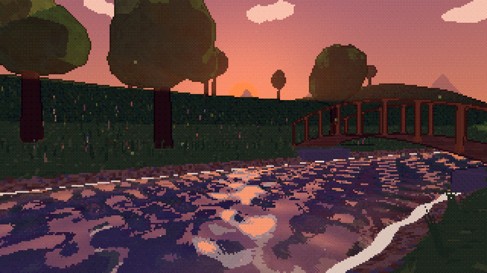
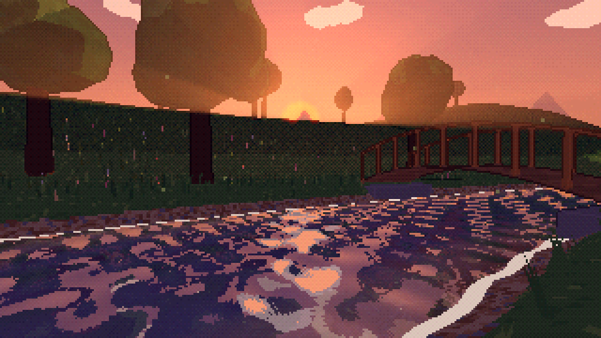
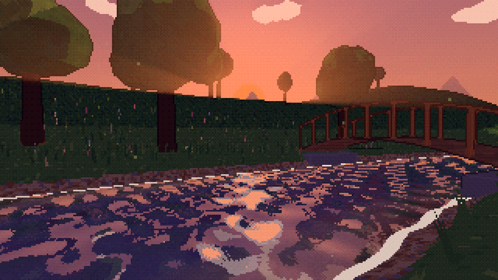
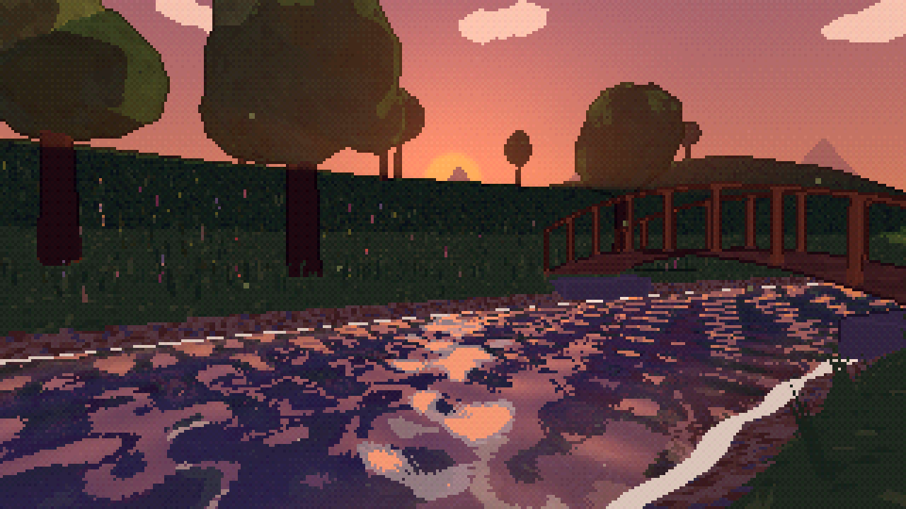
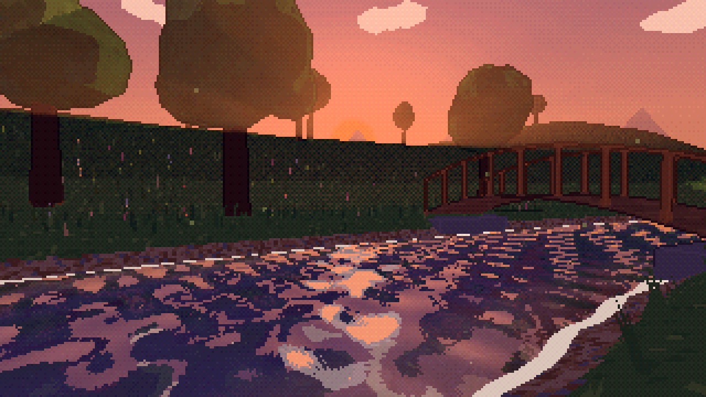
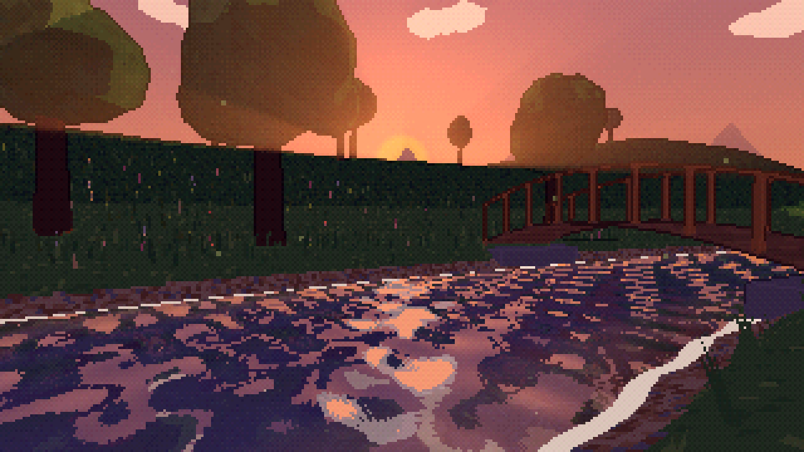

環帯平均値 0.381078

環帯平均値 0.303194

環帯平均値 0.381282
2026-10-24。夏・18:35相当・同一カメラ・320×180描画。HUDは同じ条件で非表示。
光芒の実効強度が約11.3%に低下し、空中光も弱くなっていました。画面効果と光線設定を旧方式へ切り戻し、木漏れ日・影更新・6秒周期の修正を保持しました。
詳細設計・検証結果 ／ 切り分けの数値と条件 ／ 切戻し後の回帰検証 ／ 全場面の比較


画像指標は表示RGBの環帯平均値であり、物理的な輝度や美しさの点数ではありません。



